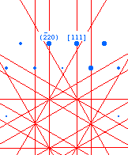
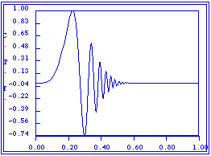
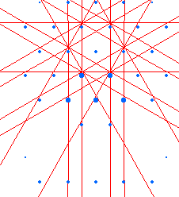

Aberrations: Distortions in the image due to the inability of a lens to bend a beam through an exact focal point. Spherical Aberrations are caused by changes in the image due to radial variation in the lens focal lenght. Chromatic Aberrations are caused by changes in the image due to variation in the lens focal length as the result of particle-waves with different energies.
base crystal: The base crystal is the crystal that the beam or the computer screen is oriented with respect too. The most common situation is for the matrix crystal to be the base crystal. However, if the matrix crystal is not active when the diffraction or stereogram is initially oriented the lowest numbered precipitate becomes the base crystal. Be aware that the Matrix crystal is still the reference for any orientation relationships and therefore orientations between crystals will necessary the base crystal.
Bragg Condition: A crystal is considered to be in the Bragg Condition when the Ewald Sphere is oriented such that it passes through a specified g-vector . In TEM this condition is considered to be achieved when the Kikuchi Band is oriented such that the outside of the band passes through the origin and the g-vector of interest.

Calculated Example of the Bragg Condition.Contrast Transfer Function (CTF):
The Contrast Transfer Function (CTF) is the function which describes the effect of the objective lens imperfections and the aperature on the intensity of the diffracted beams. It is typically plotted in reciprocal Angstroms and varies from -1 to +1. Desktop uses the model described on pages 526 - 530 of High-Resolution Transmission Electron Micrscopy and Associated Techniques for the calculation of its CTF.
 Laue Circle: The Laue Circle is determined by setting a vector from the center of a zone axis to the actual beam direction. Rotating this vector about the center of the zone axis then sets the Laue Circle. This initial Laue Circle corresponds to the locus of points in the diffraction plane which are at the Bragg Condition (highly excited) and is considered the zero order Laue Circle. Additional order's of Laue Circles are set by determination of the locus of points for successive layers of the lattice planes. The concept of the Laue Circle can be used to exactly specify a crystal orientation with respect to an exciting beam. See Spence and Zuo.
Laue Condition: A crystal is considered to be in the Laue Condition when the Ewald Sphere is symmetrically oriented with respect to a specified ±g-vector pair. In TEM this condition is considered to be achieved when the Kikuchi Band is Midway between the ±g-vector pair.

Calculated Example of a Laue Condition.log dynamic range: An empirical number used by Desktop Micrscopist to determine the size and relative intensity of diffraction spots. Increasing its value will cause the diffraction pattern to flatten out in appearance (decrease contrast).
Systematic Row: Essentially, a systematic row is the row of diffraction intensities that can be generated from a single g-vector. Typically, the concept is associated with the 2-beam condition.
tilt direction,direction of tilt: When rotating a crystal about an axis through the origin, the tilt direction corresponds to the direction crystal poles move when tilting in a positive direction.